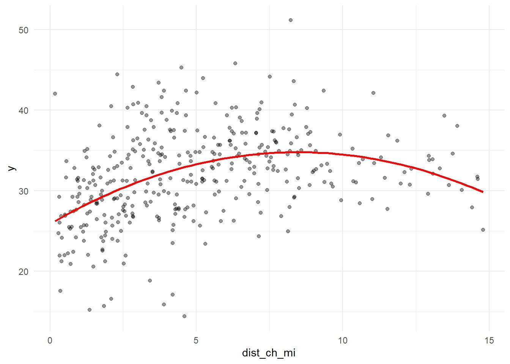
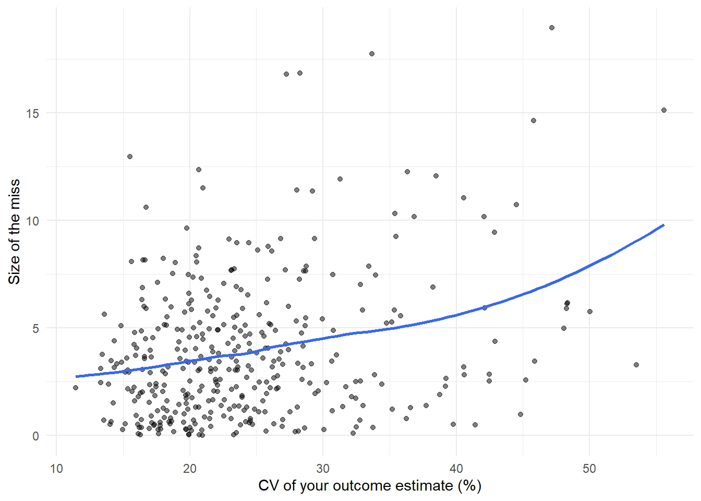

The question
Can spatial features improve predictions of mean travel time to work across Philadelphia census tracts? I used the 2019–2023 ACS outcome and compared a baseline with additional neighborhood features and variable transformations.
Building comparable models
I used the same tracts, ten folds, and seed across model comparisons. The features included household income, educational attainment, households without a vehicle, burglary counts and density, and distance to an Indego station. Open-data features were restricted to 2023 or earlier to avoid using future information.

What the diagrams test
Scatterplots guided log, squared-term, and categorical transformations. Among the tested additions, squared distance to an Indego station had the lowest reported CV RMSE at 5.12 minutes; log income had the highest at 5.18 minutes. All three untransformed spatial additions performed worse than the baseline. Extra complexity did not automatically improve predictions.

Reading the residual maps
The report places the final and baseline maps side by side. The in-sample mean absolute residual moves from 3.95 to 3.91 minutes, and four of the five largest baseline misses remain among the final model’s five largest misses. A small overall improvement can therefore coexist with persistent local errors. The panels have separate scales, so compare their legends as well as their colors.
Uncertainty and next steps
The correlation between outcome coefficient of variation and absolute final residual is 0.28. This is consistent with some error occurring where ACS estimates are less precise, but it does not explain all remaining error. Transit travel times, service frequency, and access to job centers would be useful next features. These models describe predictive association, not causal effects.
Adapted from the published Penn MUSA 5080 report. The residual maps describe fitted models; cross-validation scores answer a separate prediction question.
Discuss a similar project ↗